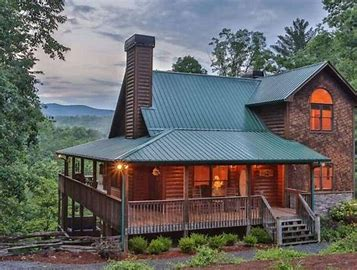

Stay in paradise when visiting Memphis
Blue Lodge Memphis is a cute and quite lodge located in the outskirts of Memphis, Tenessee. We are just minutes away from the following attractions.
- Graceland
Explore Elvis Presley's home, Graceland Mansion. Fully immerse yourself in Elvis' life and career like never before at Elvis Presley's Memphis as you experience Elvis' roots, his influences and his artistry. You can book a tour here www.graceland.com
- Memphis Zoo
The Memphis Zoo, located in Midtown, Memphis, Tennessee, United States, is home to more than 3,500 animals representing over 500 different species. You can buy tickets here https://www.memphiszoo.org/
- Pink Place Museum and Planetarium
The Museum of Science & History - Pink Palace in Memphis, Tennessee, serves as the Mid-South's major science and historical museum and features exhibits ranging from archeology to chemistry. You can schedule a tour here https://moshmemphis.com/